monitoring
La SCMP raccoglie metriche da tutti i cloud provider e le aggrega per macro-categorie.
Questa aggregazione consente il confronto tra metriche di provider diversi.
Accedendo alla dashboard, è possibile vedere come questo meccanismo di aggregazione fornisca una panoramica dell’utilizzo delle risorse, suddivisa per provider e organizzata per tipologia di risorsa associata.
All’interno della funzionalità, è possibile filtrare per tipologia di risorsa utilizzando la barra delle tab in alto, mentre per una visione generale si può utilizzare la dashboard.
Il modulo di monitoring è accessibile tramite il menu dedicato. Come mostrato in figura:

Dashboard di monitoring
A questo punto, l’utente si troverà nella pagina della tab “Dashboard” del monitoring.
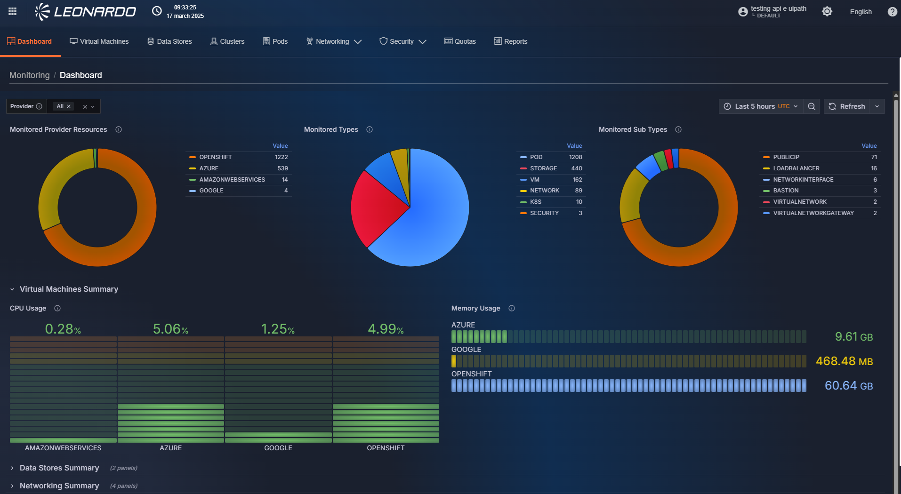
Filtri della sezione Monitoring
All’interno della pagina sono disponibili una serie di filtri che possono essere selezionati contemporaneamente per filtrare i risultati della dashboard.
Il filtro principale è il periodo di visualizzazione, che si trova in alto a destra. Cliccandoci sopra si apre una finestra di selezione (in giallo in figura) dove è possibile inserire un intervallo di tempo personalizzato, utilizzando i campi “Da” e “A” a sinistra, oppure selezionare un intervallo “Smart” cliccando direttamente sulla scelta desiderata nella sezione scorrevole a destra.
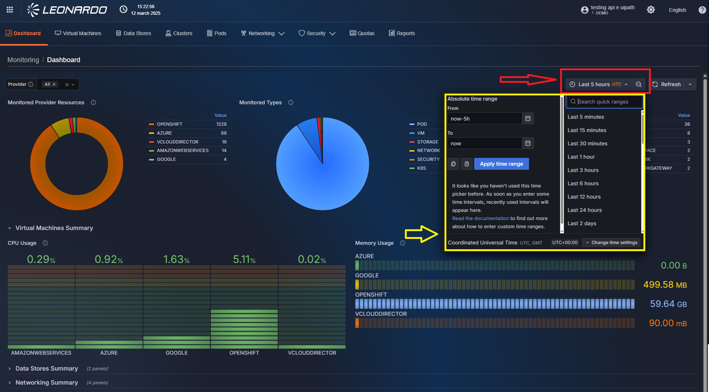
Inoltre, in alto a sinistra della pagina sono disponibili una serie di filtri che permettono di filtrare le risorse recuperate. In particolare, è possibile filtrare per:
- Tipologia provider
- Nome sottosistema
- Nome risorsa (solo nelle dashboard di dettaglio)
Questi filtri permettono la selezione multipla e possono essere combinati per ottenere la granularità desiderata.
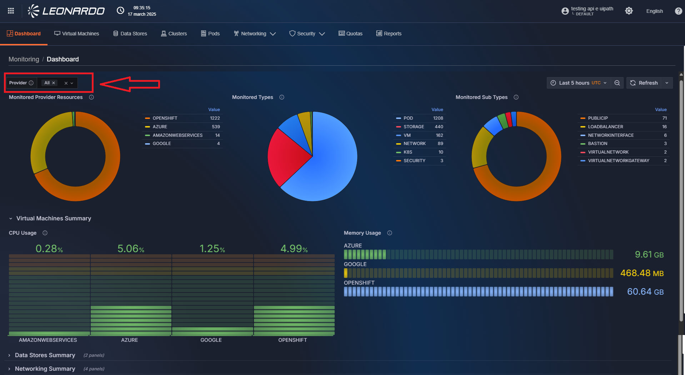
Dashboard Quotas
La dashboard Quotas, disponibile nella tab “Quotas”, consente di visualizzare i dettagli dei consumi e dei limiti applicati ai sottosistemi di tipo Vcloud.
Per accedervi, è necessario cliccare il pulsante in alto nella barra delle tab.
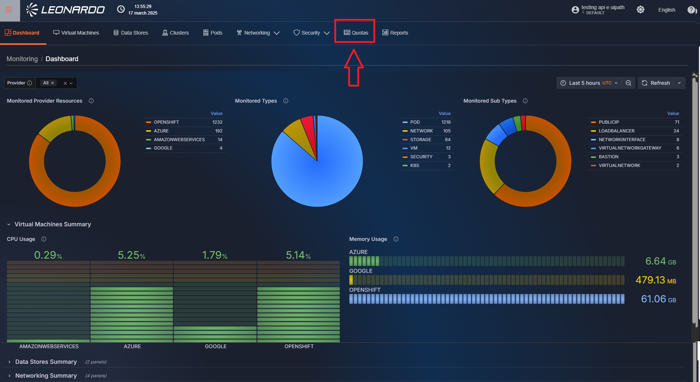
A questo punto, l’utente si troverà nella pagina della tab “Quotas” del monitoring. In alto è presente una barra filtri che consente di filtrare per provider o sottosistema. Inoltre, è possibile visualizzare i filtri per il grafico tramite il pulsante “Mostra filtri aggiuntivi”; questi filtri modificano la visualizzazione del grafico. Sotto i filtri, è presente una tabella che indica il nome del sottosistema e le quote utilizzate, i limiti e un utilizzo medio suddiviso per tipologia di risorsa. Infine, in basso, può essere visualizzato un grafico temporale sulla metrica selezionata nei filtri.
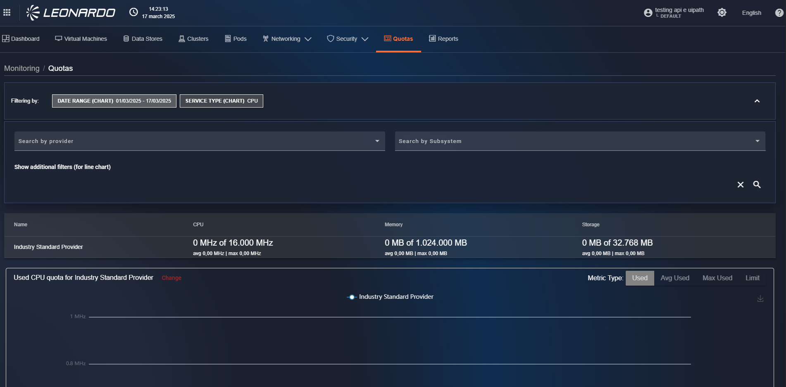
Allarmi sull’utilizzo delle Quotas
Per permettere all’utente di ricevere notifiche quando vengono superate le soglie di utilizzo delle quote, è stato incluso un modulo “Alerting”. Per accedervi, è necessario selezionare la tab in alto della funzionalità Monitoring.
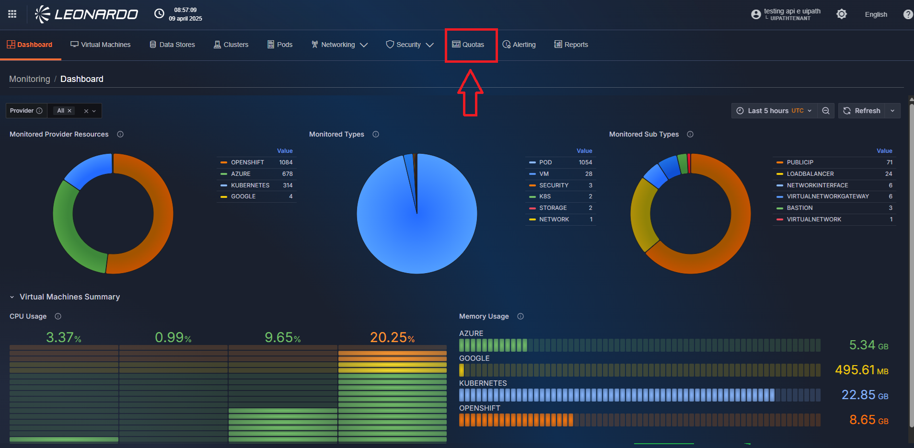
All’interno della pagina troviamo l’elenco degli “alert” configurati sul sistema, insieme alle rispettive configurazioni.
Creazione di un nuovo Alert
Utilizzando il menu disponibile a destra, è possibile aggiungere un nuovo alert al sistema. Per farlo, selezioniamo l’opzione “Nuovo alert” visualizzata e si aprirà una pagina di configurazione.
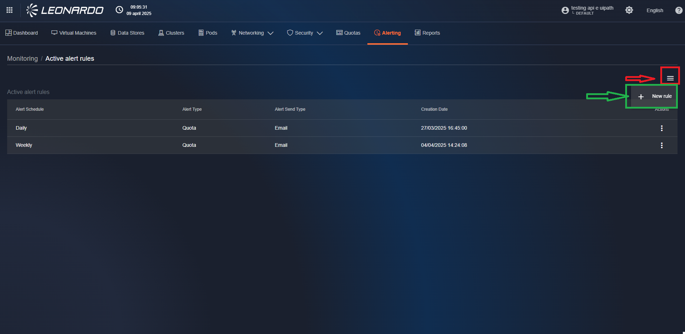
Nella pagina di configurazione, tutti i campi devono essere compilati, in particolare:
- “Tipo di alert”: Selezionare la tipologia di alert
- “Schedulazione alert”: Indica la frequenza dei controlli da effettuare
- “Tipo di quota”: Selezionare la quota da monitorare
- “Soglia (%)”: Inserire la percentuale oltre la quale verrà inviato l’alert
- “Sottosistemi”: Selezionare uno o più sottosistemi da monitorare
- “Tipo invio alert”: Selezionare la modalità di ricezione dell’alert, via e-mail o Rabbit queue (per integrazione automatica con altri sistemi)
- “Formato alert”: Selezionare il formato del file inviato che definisce i dettagli dell’alert
- “Email”: Se si seleziona E-mail come modalità di notifica, è possibile inserire un indirizzo email a cui inviare i report. Dopo aver inserito un’email, è necessario premere “Invio” sulla tastiera per confermare l’inserimento. Una volta premuto, l’email appena inserita si sposterà nel box in basso e il campo verrà svuotato per permettere l’inserimento di un nuovo indirizzo, se necessario.
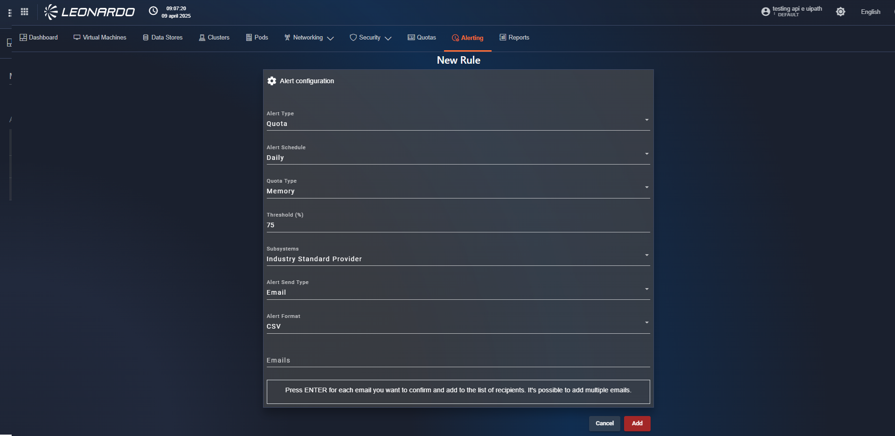
Visualizzazione, modifica e cancellazione di un Alert
In questa pagina troviamo l’elenco e le relative informazioni degli alert presenti nel sistema. Per ogni risultato, cliccando sul pulsante “tre puntini” a destra, sarà possibile effettuare tre operazioni:
- Visualizzare la configurazione dell’alert
- Modificare le impostazioni dell’alert
- Eliminare la schedulazione per interrompere l’invio delle email
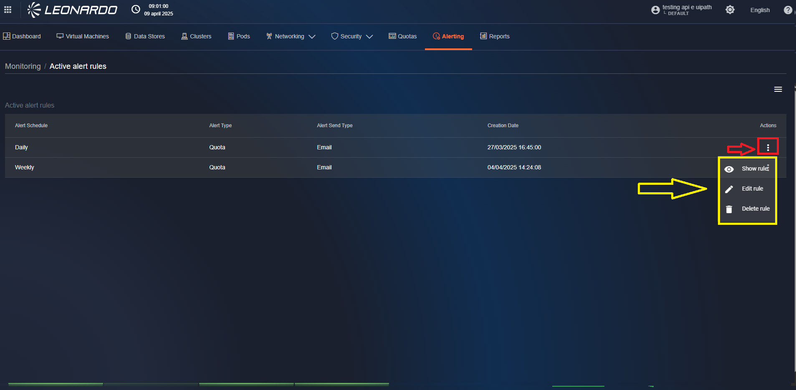
Strumenti di Reportistica
La funzionalità di reportistica, specifica per ogni funzionalità, consente di generare report globali delle informazioni disponibili per i vari provider. All’interno delle pagine sarà anche possibile creare file per facilitare la condivisione delle informazioni. Per accedere alla funzionalità, sopra il breadcrumb, cliccare sulla tab “Reports”.

Tipologie di report disponibili
- Monitoring Threshold Quotas – Elenco dei sottosistemi VCloud e/o Backup integrati nella SCMP, con dettaglio delle quote di utilizzo (CPU, Memoria, Storage, Backup). In base alla combinazione di filtri selezionata, è possibile filtrare i sottosistemi che superano una certa soglia di utilizzo.
Creazione di un report
In alto a destra della pagina, è possibile cliccare sul pulsante “Nuovo Report” per avviare la creazione di un report. In particolare, viene visualizzata una modale contenente l’elenco delle tipologie di report disponibili.
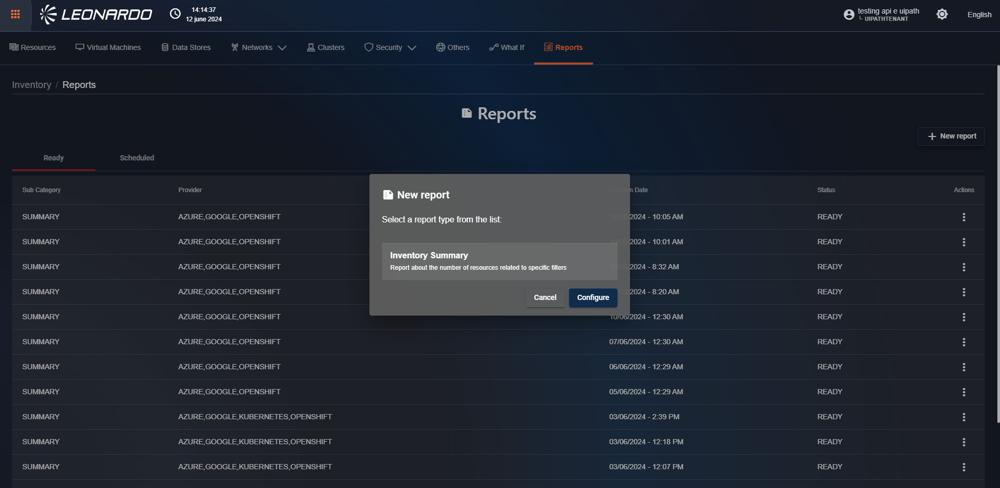
Una volta selezionata la tipologia di report, cliccare su “Configura” per selezionare i provider da includere nel report. Nella nuova finestra troviamo il campo “Provider” che consente di selezionare uno o più provider già presenti nel sistema. Successivamente, è possibile selezionare uno o più sottosistemi da includere nel report; se non si selezionano provider, non sarà possibile selezionare sottosistemi. Infine, è presente una sezione “tag” per includere solo le risorse che hanno il tag inserito.

A questo punto, l’utente può scegliere tra due azioni diverse:
- Creare un report statico che verrà salvato nel sistema
- Pianificare un job che generi il report periodicamente
Per confermare la creazione di un report statico, verificare che sia selezionato “One-Shot” per il campo “Tipo report” e cliccare sul pulsante “Submit” in basso. Dopo un periodo di caricamento, il nuovo report generato sarà visibile nell’elenco.
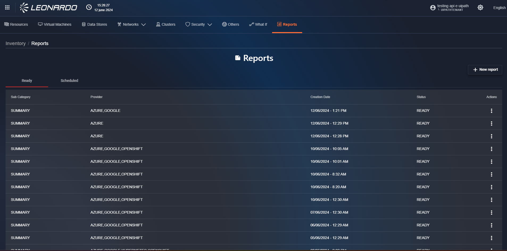
Pianificazione report
Se invece si desidera l’esecuzione automatica del report, sarà necessario selezionare “Ricorrente” per il campo “Tipo report”. In questo caso, la finestra si aggiorna mostrando parametri aggiuntivi per la configurazione del report periodico. I parametri da inserire sono:
- Periodo: consente di selezionare la frequenza di invio del report (oraria, giornaliera, ...)
- “Ricevi solo se non vuoto”: se selezionato, il file non verrà inviato quando non contiene informazioni
- Lingua report: consente di selezionare la lingua utilizzata nel report
- Formato file: consente di selezionare uno o più tipi di file da includere nell’email
- Email utente: consente di inserire un indirizzo email a cui inviare i report. Dopo aver inserito un’email, è necessario premere “Invio” sulla tastiera per confermare l’inserimento. Una volta premuto, l’email appena inserita si sposterà nel box in basso e il campo verrà svuotato per permettere l’inserimento di un nuovo indirizzo, se necessario.

Configurati tutti i parametri, il pulsante “Submit” diventerà cliccabile. Cliccarlo per confermare l’inserimento e, dopo un periodo di caricamento, il nuovo report generato sarà visibile nell’elenco.
Elenco report pianificati
Per visualizzare l’elenco dei report pianificati, selezionare la tab “Scheduled” in alto a sinistra nella pagina dei report.

In questa pagina troviamo l’elenco e le relative informazioni dei report pianificati presenti nel sistema. Per ogni risultato, cliccando sul pulsante “tre puntini” a destra, sarà possibile effettuare tre operazioni:
- Visualizzare l’ultimo report generato
- Modificare le impostazioni della schedulazione (non sarà possibile modificare provider o sottosistemi selezionati)
- Eliminare la schedulazione per interrompere l’invio delle email
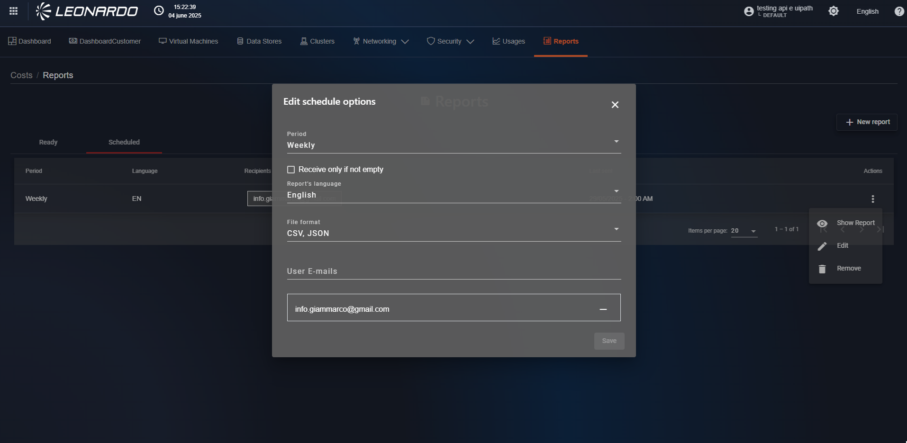
Utilizzo dei report
Cliccando su una riga di report statico, o utilizzando il pulsante “Mostra report” disponibile per i report pianificati, sarà possibile visualizzare la pagina di dettaglio del report selezionato. All’interno del riepilogo report Inventory è presente una sezione “Stats” che include il numero di dischi, interfacce, reti e macchine virtuali appartenenti al provider selezionato. Sotto la sezione “Stats” sono presenti i filtri utilizzati dall’utente per generare il report. Sotto i filtri, è presente una tabella riepilogativa delle risorse appartenenti ai provider. A destra sono presenti due pulsanti: “PRINT” ed “EXPORT”. Cliccando su “PRINT” viene visualizzata una modale di anteprima di stampa. Per stampare il report, cliccare sul pulsante “Print” in basso a destra; a questo punto partirà la stampa del report. Cliccando su “EXPORT” è possibile esportare il report nei formati “.csv”, “.json” o “.pdf”. Per tornare alla tab “Results”, cliccare sul pulsante “CLOSE” in basso a destra, oppure sulla freccia verso sinistra in alto a sinistra, accanto al titolo del report.